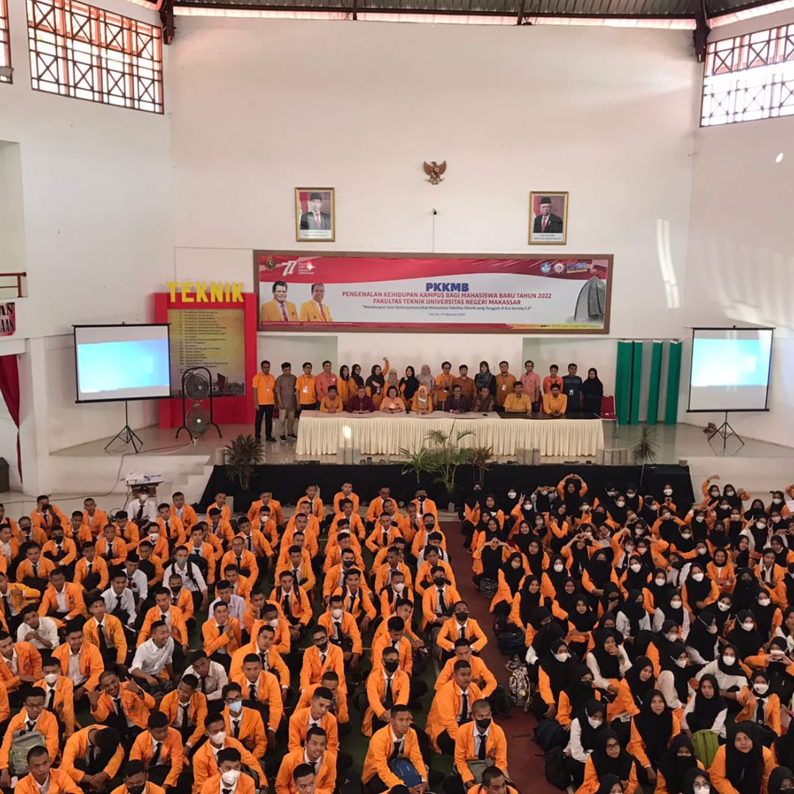

Saya memulai perjalanan kuliah di Program Studi Teknik Informatika dan Komputer (PTIK) dengan semangat dan antusiasme yang membara. Atmosfer unik di dunia teknologi informasi segera membuat saya terpesona begitu memasuki lingkungan kampus. Pilihan ini membuka pintu untuk menjelajahi berbagai aspek menarik dari dunia komputer. Selama dua tahun pertama, kuliah di PTIK memberikan fondasi yang kuat dalam pemrograman dan algoritma. Tantangan-tantangan dalam menyelesaikan tugas pemrograman mendorong kreativitas dan ketekunan saya. Setiap kode yang berhasil berjalan terasa seperti sebuah prestasi, mengingat malam-malam larut yang dihabiskan di depan layar komputer. Bagi saya, ini bukan hanya tentang menyelesaikan tugas, tetapi juga menemukan kepuasan dalam mengatasi kesulitan.
Salah satu pengalaman paling menarik adalah saat kami memasuki semester kedua dan mempelajari mata kuliah komunikasi data. Mata kuliah ini membawa kami dalam perjalanan mendalam untuk memahami cara data dikirim, diterima, dan diinterpretasikan oleh berbagai perangkat. Kami belajar tentang protokol komunikasi, media transmisi, dan teknik enkripsi, yang menjadi dasar penting dalam memahami cara dunia terhubung melalui teknologi informasi. Dari teori hingga praktik, kami belajar bagaimana mengatasi tantangan dalam mengelola aliran informasi yang semakin kompleks. Semua pengalaman ini membentuk saya menjadi individu yang penuh semangat dan siap menghadapi dunia teknologi yang terus berkembang.